Exploration of Economic Trends in South Asia Across Major Crises
Introduction
This project examines how major global crises affected economic conditions across South Asia by comparing trends in employment ratio, GDP growth, and GDP per capita for Bangladesh, Bhutan, India, Sri Lanka, Maldives, Nepal, and Pakistan. The analysis focuses on three major shocks: the 1997 Asian Financial Crisis, the 2008 Global Financial Crisis, and the COVID-19 pandemic. By comparing economic patterns before, during, and after each crisis, this project evaluates how different types of global disruptions shaped economic performance and recovery across selected South Asian countries
The main findings suggest that South Asian economies were generally resilient across these crises, although the level of impact varied by country and by type of shock. The 1997 Asian Financial Crisis had the weakest effect on the region, with GDP per capita continuing to rise, GDP growth remaining mostly positive, and employment ratios staying relatively stable. The 2008 Global Financial Crisis had a more uneven impact, slowing growth in several countries while leaving employment and GDP per capita comparatively stable. The COVID-19 pandemic caused the sharpest and most widespread disruption, especially in GDP growth, with countries such as Maldives and India experiencing major contractions before rebounding. Overall, Bangladesh appeared especially resilient across the crises, while Maldives showed the greatest volatility, likely because of its dependence on tourism.x
Data Description
All data in this project comes from the World Bank’s World Development Index database. For the purpose of this project, we focused on seven countries in South Asia to analyze their economic trends. Raw data for economic indicators of interest were pulled from the World Bank API using their specific indicator codes and stored in a local SQLite database. We ran a custom SQL cleaning script to rename columns for readability, mapped ISO country codes to full country names, rounded all numeric values to two decimal places, and filtered out rows where all key indicators were missing. A flag column was also added to identify the years of the major economic shocks we were interested in. The economic indicators we pulled were gdp_per_capita, gdp_growth_pct, and employment_ratio. GDP_per_capita is a measure of average economic output per person, adjusted for inflation by rescaling to 2015 USD. GDP_growth_pct is annual percentage growth of GDP which can be interpreted as a measure of the rate of economic growth. The employment_ratio indicator is a ratio of the employed to the total country working age population.
Data Analysis
Interpretation of main results and trends
Well-formatted tables and plots
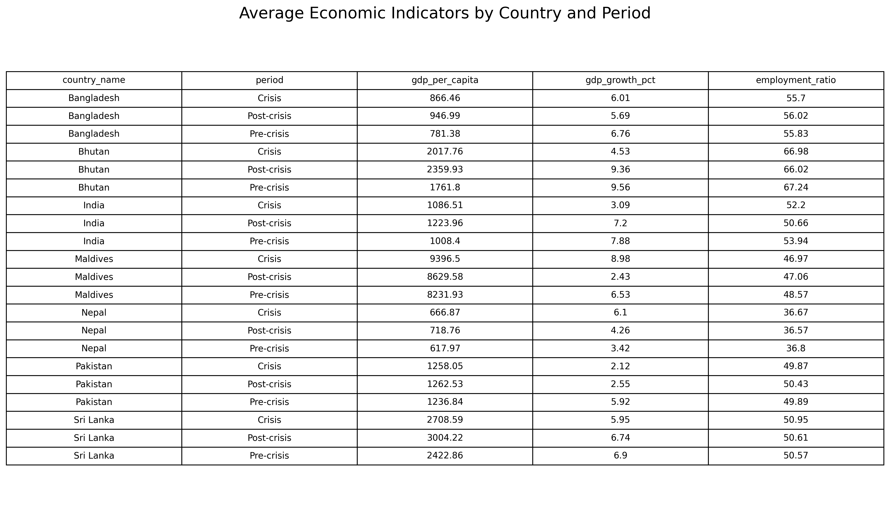
1997 Asian Financial Crisis:
The 1997 Asian Financial Crisis was a financial collapse that began in Thailand when its currency lost value, quickly spreading to other Asian economies like Indonesia, South Korea, and Malaysia. It caused sharp declines in currencies, stock markets, and economic growth, leading to widespread business failures and significant economic hardship across the region.
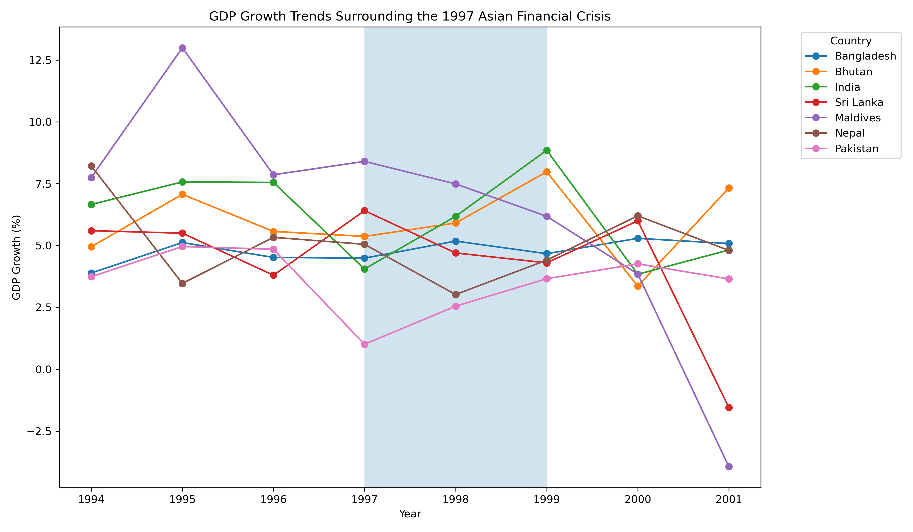
Figure 1 tracks annual GDP growth rates from 1994–2001, with the crisis years (1997–1998) shaded. It shows that most South Asian countries saw only a mild dip in growth. The overall pattern indicates that the incident acted more as a headwind rather than an extremely destructive financial crisis for South Asia.
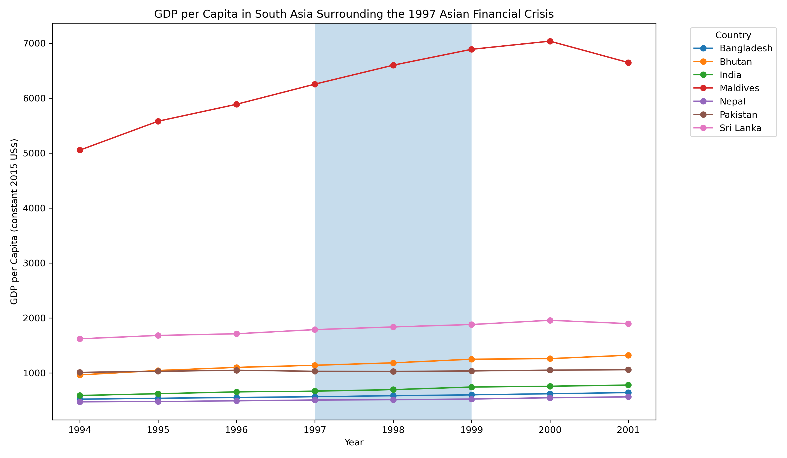
Figure 2 shows GDP per capita trajectories. Every country’s GDP per capita continued rising through 1997–1998, which shows South Asia’s insulation from the 1997 Asian Financial Crisis. This chart provides the strongest evidence of South Asia’s resilience to the 1997 Asian Financial Crisis.
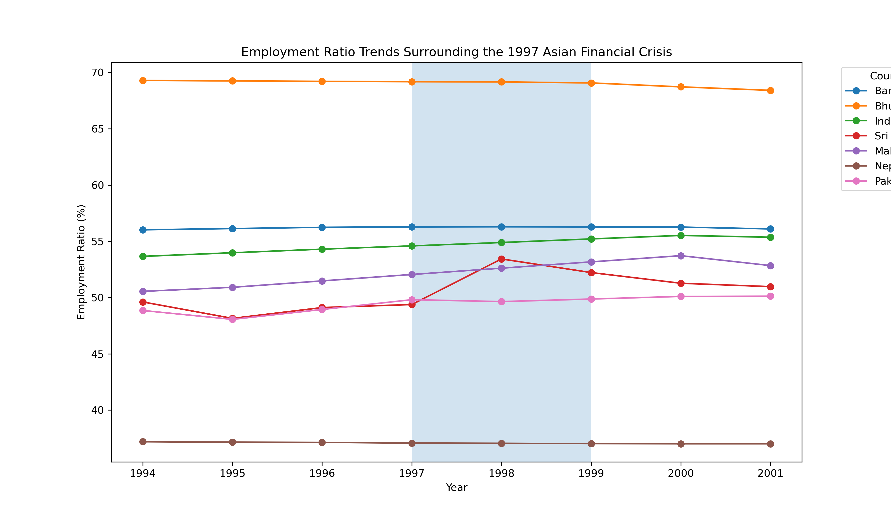
Figure 3 shows employment-to-population ratios over time. The near-flat lines across all countries indicate that the crisis had no measurable impact on labor markets in the region.
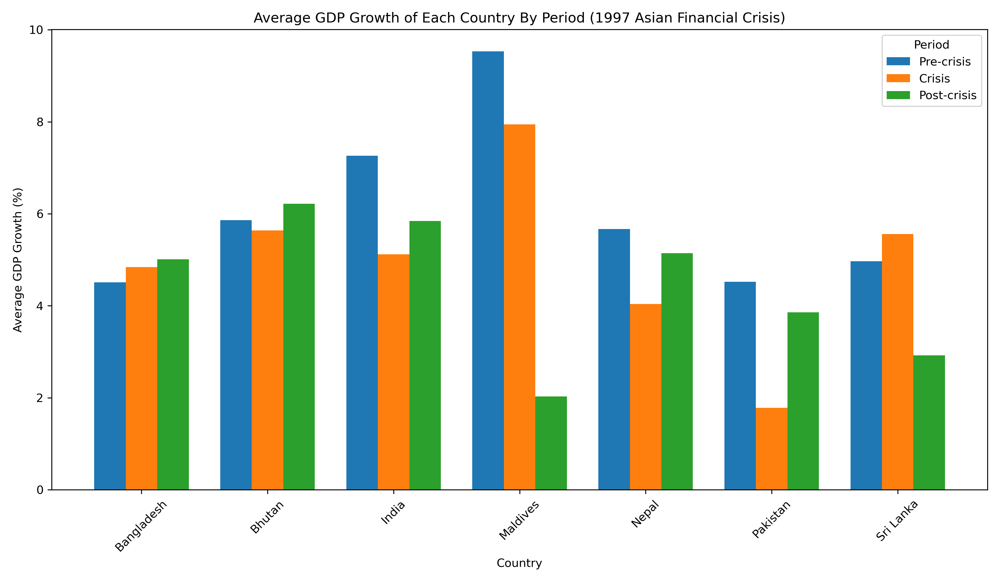
Figure 4 compares average GDP growth across pre-crisis, crisis, and post-crisis periods for each country. The crisis had very little impact on Bangladesh, Bhutan, Sri Lanka, and Nepal. Pakistan and India, on the other hand, experienced moderate impact by the 1997 Asian Financial Crisis. Maldives didn’t experience negative impact, but saw high growth throughout.
2008 Global Financial Crisis:
The 2008 Global Financial Crisis was a severe worldwide economic downturn triggered by the collapse of the U.S. housing market and the failure of major financial institutions. It led to widespread bank failures, massive job losses, and a deep global recession that affected economies around the world.
The 2008 global financial crisis affected South Asian economies differently across employment, output growth, and income levels. The following figures summarize trends in employment ratio, GDP growth, GDP per capita, and average crisis-period comparisons across the selected countries.
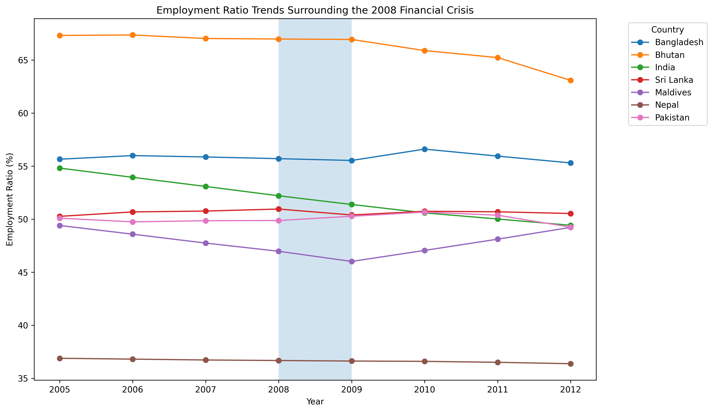
Figure 5 shows employment ratio percentages for seven South Asian countries from 2005 to 2012, with a shaded region to mark the 2008–2009 financial crisis. Based on the figure, employment ratios were relatively stable across most South Asian countries during the 2008 crisis period. Bhutan remained the highest throughout despite a later decline, India and Maldives experienced more noticeable drops around and after the crisis period, while Bangladesh, Sri Lanka, Pakistan, and Nepal stayed comparatively steady with only modest fluctuations.
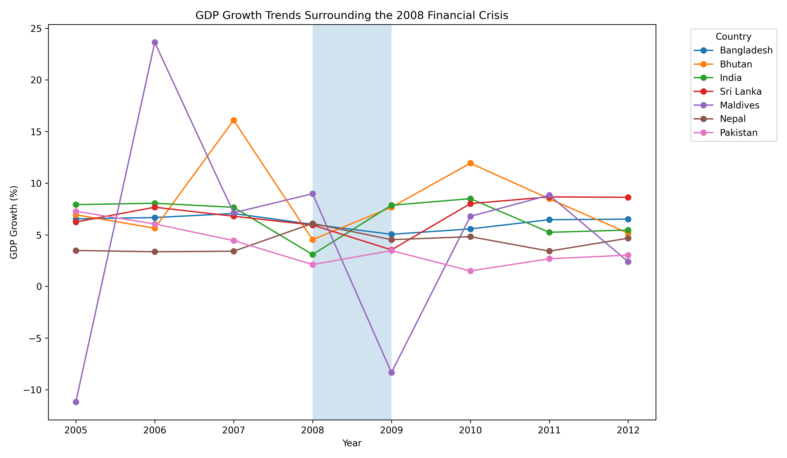
Figure 6 tracks the annual GDP growth percentages for South Asian countries from 2005 to 2012, using a shaded region to highlight the economic impact of the 2008–2009 financial crisis. The data shows that while most of these nations maintained positive growth despite a general slowdown during the crisis window, the Maldives exhibited extreme volatility and dropped sharply into negative growth in 2009.
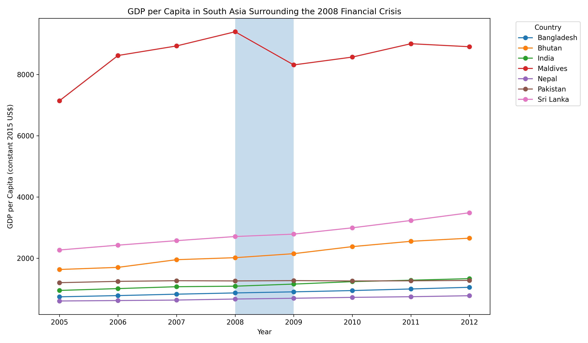
Figure 7 illustrates the GDP per capita for South Asian nations from 2005 to 2012. The Maldives had significantly higher GDP per capita than the other countries and suffered a distinct decline during the 2008 financial crisis. However, the other economies remained relatively steady.
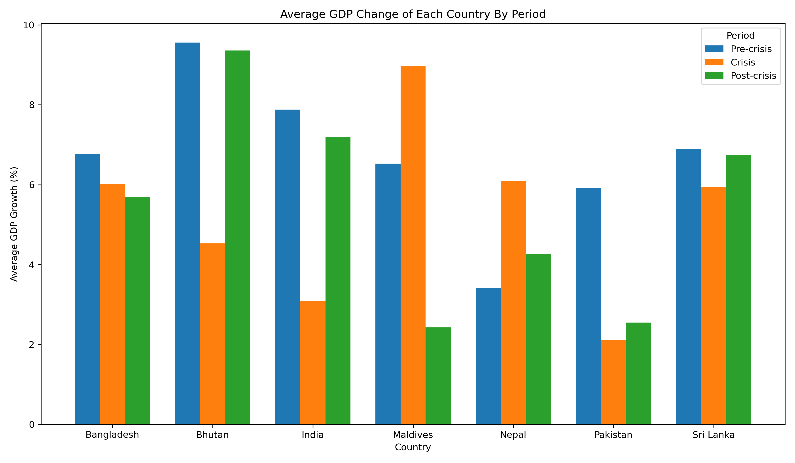
Figure 8 compares average GDP growth before, during, and after the 2008 crisis. The crisis affected South Asian countries unevenly. Bhutan, India, Pakistan, and Sri Lanka experienced lower average growth during the crisis than in the pre-crisis period, while Maldives and Nepal show higher crisis-period averages, indicating variation in economic resilience and recovery.
COVID-19 Pandemic:
The COVID-19 pandemic caused a sharp global economic downturn as lock-downs halted business activity, disrupted supply chains, and triggered one of the fastest stock market crashes in history. It led to widespread job losses, reduced consumer spending, and severe declines in industries like travel and hospitality, creating lasting instability across global markets.
The COVID-19 pandemic affected South Asian economies unevenly across employment, output growth, and income levels. The following figures summarize trends in employment ratio, GDP growth, GDP per capita, and average pandemic-period comparisons across the selected countries.
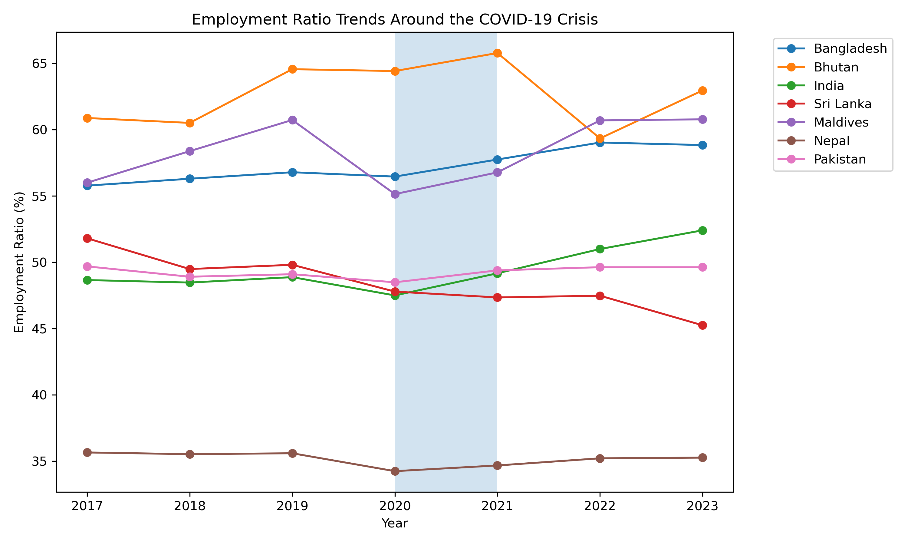
Figure 9 shows employment ratio percentages for seven South Asian countries from 2017 to 2023, with a shaded region marking the core pandemic years of 2020–2021. Based on the figure, employment ratios remained relatively stable across most countries despite short-term disruptions. Bhutan maintained one of the highest employment ratios, though it declined sharply in 2022 before recovering. Bangladesh and India experienced moderate increases after the pandemic, while Maldives showed a temporary drop in 2020 followed by a strong rebound. Nepal remained the lowest throughout with only minor variation.
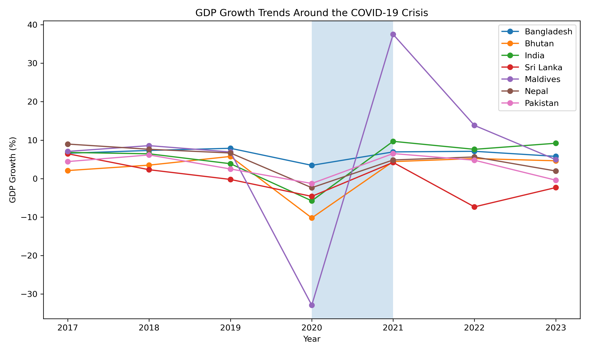
Figure 10 tracks annual GDP growth percentages for South Asian countries from 2017 to 2023, using a shaded region to highlight the pandemic shock in 2020–2021. The figure shows that most countries experienced a sharp slowdown or contraction in 2020, followed by recovery in 2021. Maldives exhibited the most extreme volatility, collapsing deeply in 2020 before rebounding strongly in 2021. India also recorded a notable contraction in 2020 and rapid recovery afterward, while Bangladesh remained comparatively resilient with consistently positive growth.
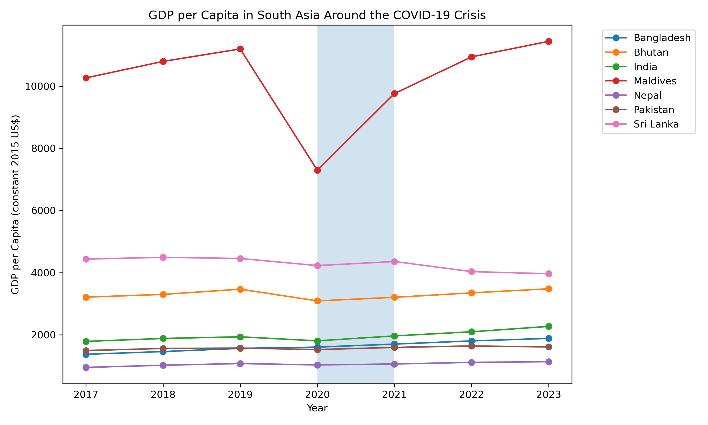
Figure 11 illustrates GDP per capita for South Asian nations from 2017 to 2023. Maldives had significantly higher GDP per capita than the other countries but suffered a pronounced decline in 2020 during the pandemic before recovering in subsequent years. Most other countries experienced only modest interruptions and resumed gradual upward trends after 2020, particularly Bangladesh and India.
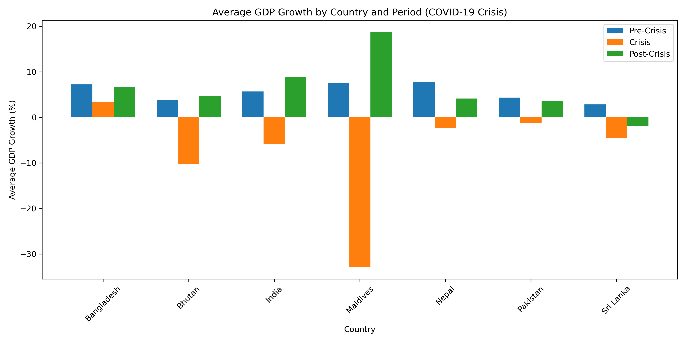
Figure 12 compares average GDP growth before, during, and after the pandemic. The pandemic affected South Asian countries unevenly. Bangladesh maintained positive average growth throughout all periods, indicating strong resilience. Maldives experienced severe contractions during the crisis period but posted strong recoveries afterward. Bhutan also saw a decrease in growth during the pandemic but recovered shortly after. India and Nepal also rebounded notably post-pandemic, while Sri Lanka remained comparatively weak in the recovery phase.
Results and Discussion
1997 Asian Financial Crisis:
The most striking finding in the 1997 Asian Financial Crisis is how insulated South Asia was from the crisis that devastated much of East and Southeast Asian Countries. Despite the crisis, GDP per capita of all the South Asian countries continued to rise throughout 1997 – 1998 without exception, and average regional GDP growth only fell by less than 1% from 6.0% pre-crisis to 5.1% during the crisis. The resilience can be explained by limited financial integration between South Asian countries and East & Southeast Asia. South Asian economies had restricted capital accounts and underdeveloped equity market. Usually, these characteristics would be considered a reflection of bad economic and financial system development. However, during the 1997 Asian Financial Crisis, the characteristics shielded the South Asian countries from currency speculation and capital flight that triggered crisis instead. That said, South Asia wasn’t completely unaffected by the crisis. Some countries, especially Pakistan and India, experienced significant economic slowdown. Pakistan’s average GDP growth dropped from 4.5% pre-crisis to just 1.8% during the crisis period. India also saw a dip to 4.1% growth rate in 1997 before rebounding to 6.2% in 1998 and fully recovered to 8.9% in 1999. Employment ratios remained largely flat throughout the period across all countries, which suggests that the pressure on economic growth did not translate into labor market disruption. Nepal and Bangladesh showed the least volatility of any country across all three metrics.
2008 Financial Crisis:
The 2008 Global Financial Crisis had a more visible but still uneven effect on South Asian economies compared with the 1997 Asian Financial Crisis. While the crisis caused a global recession, most South Asian countries continued to experience positive GDP growth, suggesting that the region was affected more through slower growth than complete economic collapse. The main impact appears in GDP growth rather than employment or GDP per capita. Countries such as India, Pakistan, Bhutan, and Sri Lanka experienced lower average growth during the crisis period compared with the pre-crisis period, showing that reduced global demand, tighter financial conditions, and lower investor confidence likely slowed economic activity. However, employment ratios remained relatively stable across most countries, which suggests that the crisis did not create an immediate or dramatic labor market shock in the region. GDP per capita also remained fairly steady for most countries, although Maldives stood out because of its much higher income level and greater volatility. This uneven pattern suggests that the 2008 crisis affected countries differently depending on their exposure to global markets, financial flows, and external demand. A limitation of this analysis is that the indicators used capture broad national trends, so they may not fully show effects on specific industries, informal workers, poverty, or inequality.
2020 COVID-19 Pandemic:
The COVID-19 pandemic produced the sharpest and most widespread disruption across South Asia because it directly affected both global markets and domestic economic activity. Unlike the 1997 and 2008 financial crises, COVID-19 was not only a financial shock but also a real-economy shock caused by lockdowns, travel restrictions, supply-chain disruptions, and reduced consumer activity. This is most clearly shown in GDP growth, where most countries experienced a major slowdown or contraction in 2020 before rebounding in 2021. Maldives showed the greatest volatility, with a severe decline during the pandemic followed by a strong recovery, likely because its economy depends heavily on tourism and international travel. India also experienced a major contraction in 2020 but recovered quickly afterward, while Bangladesh appeared especially resilient by maintaining positive growth throughout the pandemic period. GDP per capita generally followed a similar pattern, with sharper disruption in Maldives and more modest interruptions in most other countries. Employment ratios were more stable than expected, although this may reflect a limitation of the employment ratio as a broad indicator, since it may not fully capture underemployment, informal labor losses, reduced hours, or temporary job insecurity. Overall, the pandemic revealed that South Asian economies could rebound after major shocks, but recovery depended strongly on each country’s economic structure and exposure to vulnerable sectors.
Conclusion
Our findings show that South Asian economies were generally resilient across major global crises, although the degree of impact varied by country and by type of shock. The 1997 Asian Financial Crisis had relatively limited effects on the region, with GDP per capita continuing to rise and employment ratios remaining stable. This is potentially due to South Asian economies being less financially integrated with the more affected economies of East Asia. The 2008 Global Financial Crisis produced more uneven results, slowing growth in several countries while leaving others comparatively stable. The COVID-19 pandemic caused the sharpest and most widespread disruption, especially in GDP growth, with countries such as Maldives and India experiencing major disruptions before rebounding. Across all three crises, Bangladesh appeared especially resilient, while the Maldives showed the greatest volatility. We believe this is due to its higher dependence on tourism which would be heavily impacted by global financial instability. These findings suggest that South Asian economies are resilient to market shocks, but recovery outcomes depend heavily on each country’s individual exposure to global markets and economic structure.